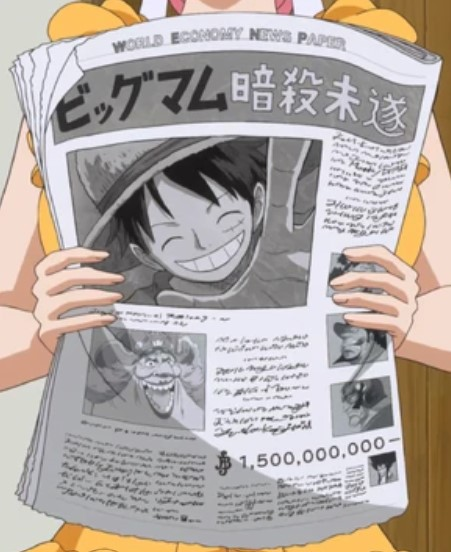

Latest News

Big news for One Piece fans this December! Chapter 1133 drops on the 8th, with another chapter coming later in the month.
The anime's taking a break until April 2025, but we're getting a remastered Fishman Island arc. Keep an eye on Jump Festa 2025 on December 12!
There are rumors about major announcements, including updates on the Wit Studio remake and maybe even a new movie or game.